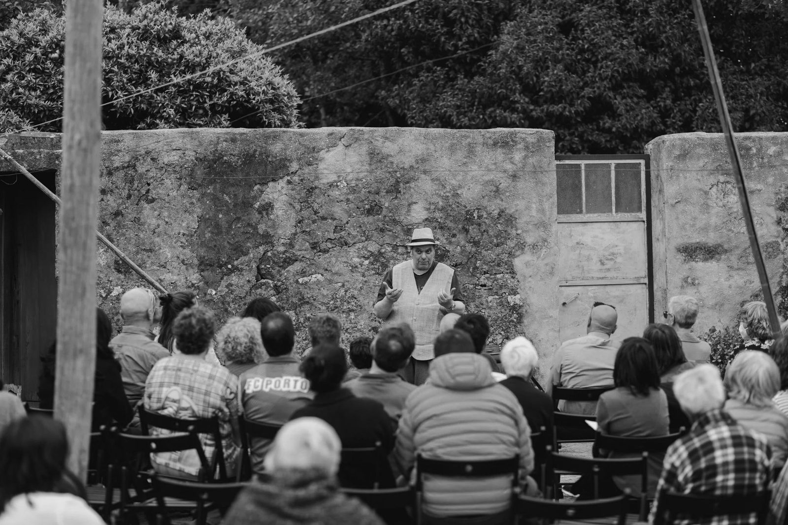
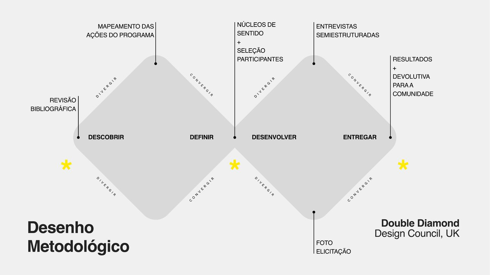
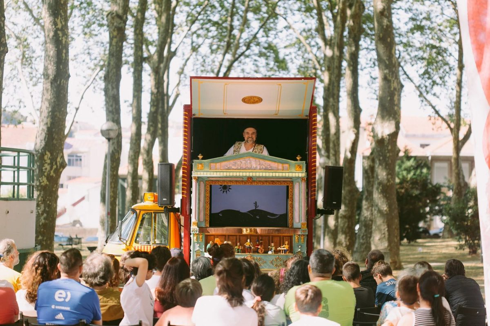
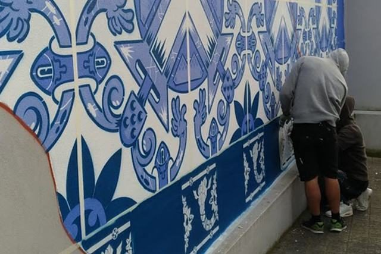
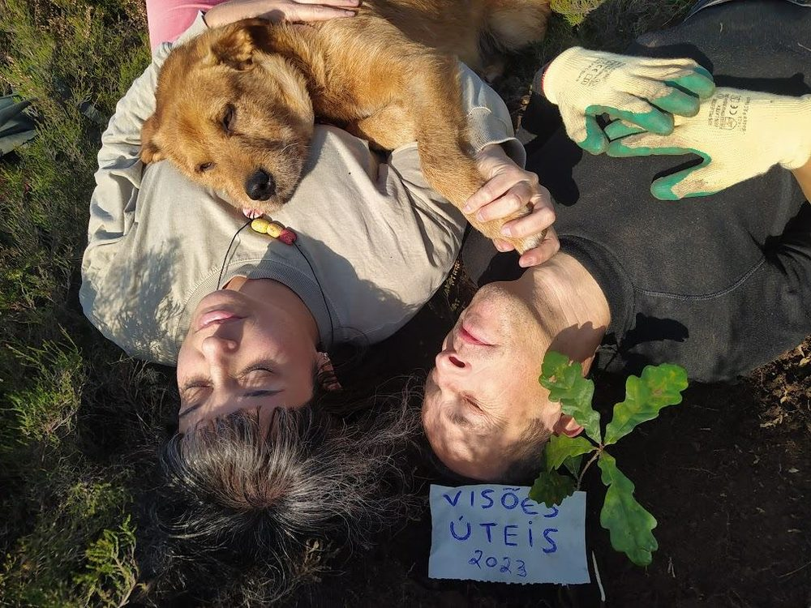
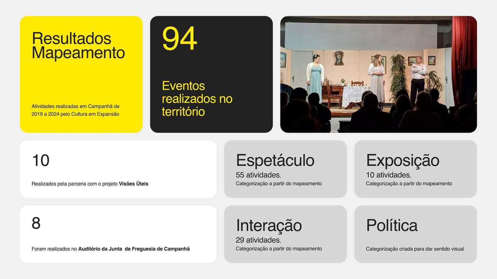
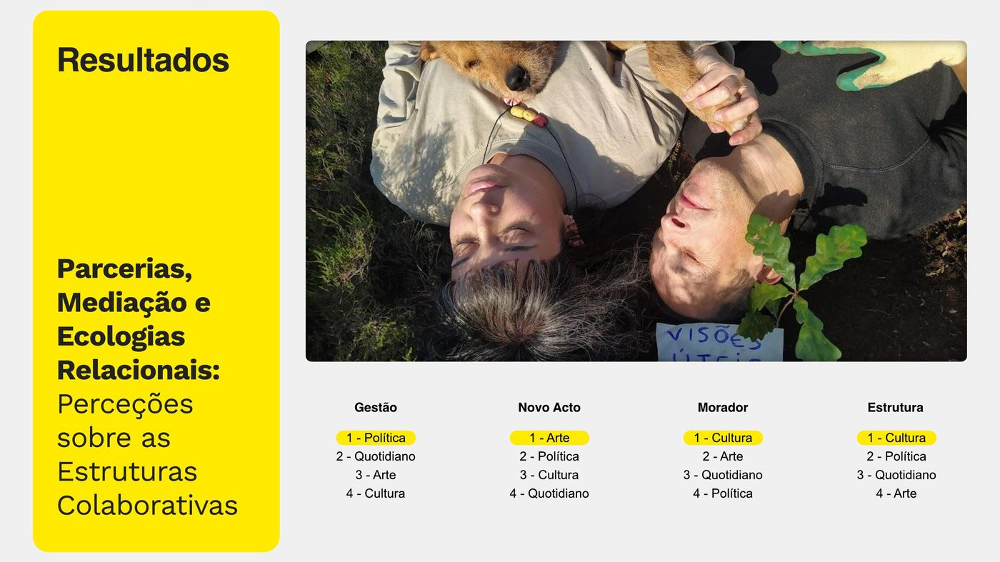
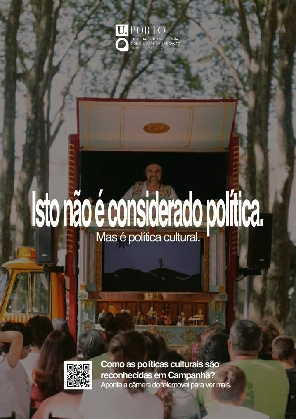

A research project for my Master's at the Faculty of Psychology and Education Sciences, University of Porto (FPCEUP), studying "Cultura em Expansão" — a public cultural policy programme run by Porto City Council in Campanhã, one of the city's peripheral neighbourhoods.
I've always believed creativity and the periphery move together — and that neither moves anywhere without collaboration.
Growing up, the most interesting creative work I saw rarely came from the centre — it came from the edges, from people making something out of very little, together. That belief is what sent me looking for a real programme to test it against. Cultura em Expansão gave me a live case: a public institution trying to bring culture to a periphery, and a chance to ask whether "bringing culture to" and "building culture with" are actually the same thing.

I structured the investigation using the Double Diamond (Design Council, UK) — alternating between opening up to gather material and narrowing down to make sense of it, twice over.

Grounding the project in theory on cultural policy, periphery and participatory practice.
Mapped every activity run by the programme, then clustered them into meaning groups and selected participants.
Semi-structured interviews with 4 stakeholder groups, plus a photo-elicitation exercise using 18 selected images.
Synthesised results and returned them to the community as a public exhibition piece.
Photo-elicitation only works if the images are specific to the place. These came directly from fieldwork and from the programme's own activities in Campanhã.



Before interviewing anyone, I mapped every public activity the programme ran between 2019 and 2024 — the base layer everything else was built on.

When asked to rank what stood out most about the programme, each stakeholder group answered differently — and the pattern held across every topic I asked about.
Each group ranked four sense-making categories — Art, Culture, Everyday life, Politics — in order of what felt most present in the programme.

One finding — that partner organisations felt their creative decisions were seen as apolitical, when in fact they carried real political weight — became a poster campaign: a direct provocation, aimed at the same public spaces the programme itself uses.

A QR code on the poster links back to the research findings — taking the same visual language used to promote the programme and turning it into a question about how it's actually perceived.
This project sharpened the research skills I bring into design practice — not just visual output, but the process behind it: mapping a landscape before designing for it, running mixed qualitative methods, coding and clustering open-ended material into usable categories, and designing for trust between groups who don't naturally speak the same language. It's the same muscle I use when a brand or product needs to hold together across very different audiences.